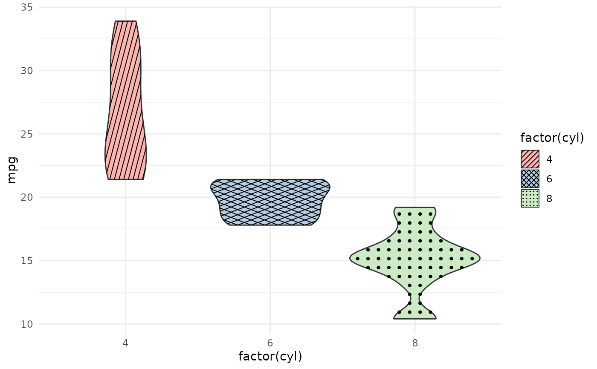
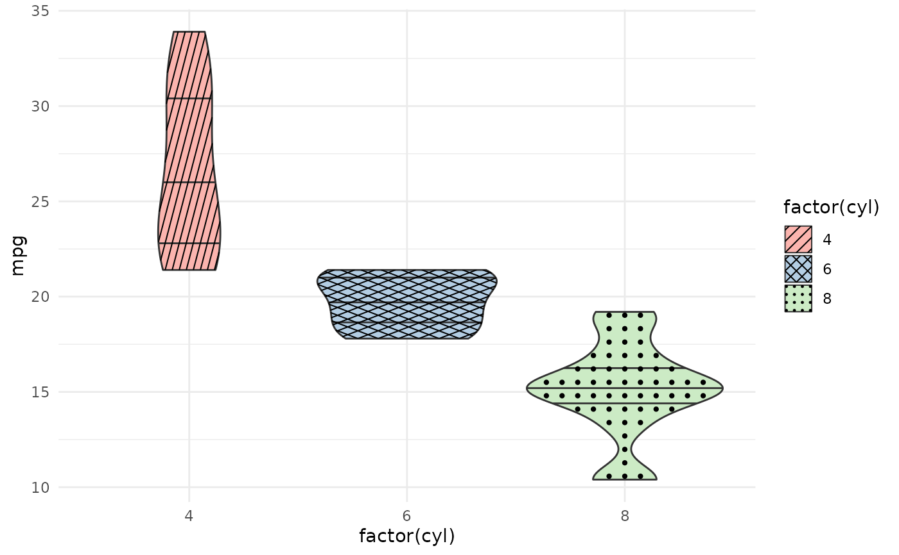

A drop-in replacement for ggplot2::geom_violin() that adds a pattern
aesthetic. The pattern is clipped to the exact violin outline using the same
device-independent in-R geometry as geom_polygon_pattern().
Usage
geom_violin_pattern(
mapping = NULL,
data = NULL,
stat = "ydensity",
position = "dodge",
...,
trim = TRUE,
bounds = c(-Inf, Inf),
scale = "area",
quantile.colour = NULL,
quantile.color = NULL,
quantile.linetype = 0L,
quantile.linewidth = NULL,
na.rm = FALSE,
orientation = NA,
show.legend = NA,
inherit.aes = TRUE
)Arguments
- mapping
Aesthetic mappings created by
ggplot2::aes().- data
Data frame.
- stat
Statistical transformation. Default
"ydensity".- position
Position adjustment. Default
"dodge".- ...
Other arguments passed to the layer.
- trim
If
TRUE(default), trim the tails of the violin to the range of the data.- bounds
A length-2 numeric vector defining the minimum and maximum allowed values for the data. Default
c(-Inf, Inf).- scale
How to scale the maximum width of each violin. One of
"area"(default),"count", or"width".- quantile.colour, quantile.color
Colour for quantile lines. Default
NULL(inherits fromcolour).- quantile.linetype
Line type for quantile lines.
0(default) means no lines are drawn.- quantile.linewidth
Line width for quantile lines. Default
NULL.- na.rm
If
FALSE(default), missing values are removed with a warning.- orientation
Orientation of the layer. Default
NA(automatic).- show.legend
Logical. Should this layer be included in the legend?
- inherit.aes
If
FALSE, overrides the default aesthetics.
Pattern aesthetics
In addition to all aesthetics accepted by ggplot2::geom_violin(), this
geom accepts:
patternCharacter name of the pattern. One of
"none","hatch","crosshatch","horizontal","vertical","dots","weave", or a custom pattern registered withregister_pattern().pattern_colourColour of pattern lines/dots. Default
"black".pattern_linewidthLine width for line-based patterns. Default
1.pattern_spacingSpacing between pattern elements as a fraction of the violin bounding box (npc units). Default
0.08.pattern_angleAngle in degrees for hatch patterns. Default
45.pattern_sizeDot diameter in mm for the
"dots"pattern. Default0.4.
Limitations
stat = "identity" requires a violinwidth column. The default stat
("ydensity") computes violinwidth automatically. If you supply
stat = "identity" with pre-computed density data, your data frame must
include a violinwidth column (values in [0, 1] representing the
normalized half-width at each y level). If the column is absent,
geom_violin_pattern() emits a message and draws nothing for that group.
Note: geom_violin() itself also requires violinwidth and would silently
produce incorrect output in this scenario; geom_violin_pattern() makes
the requirement explicit.
orientation = "y" (horizontal violins) is not supported for the
pattern overlay. The base violin renders correctly, but the pattern is
silently skipped. Use coord_flip() on a vertical violin as a workaround.
Pattern spacing is bounding-box relative. Spacing is computed relative
to each violin's bounding box. Narrow violins will show denser patterns
than wide violins at the same pattern_spacing value.
Examples
library(ggplot2)
# Basic violin with hatch pattern per group
ggplot(mtcars, aes(factor(cyl), mpg, fill = factor(cyl),
pattern = factor(cyl))) +
geom_violin_pattern() +
scale_pattern_manual(values = c("hatch", "crosshatch", "dots")) +
scale_fill_brewer(palette = "Pastel1") +
theme_minimal()

# With quantile lines — exercises the quantile overlay path
ggplot(mtcars, aes(factor(cyl), mpg, fill = factor(cyl),
pattern = factor(cyl))) +
geom_violin_pattern(
quantile.linetype = 1,
quantile.linewidth = 0.5,
quantile.colour = "grey20"
) +
scale_pattern_manual(values = c("hatch", "crosshatch", "dots")) +
scale_fill_brewer(palette = "Pastel1") +
theme_minimal()
